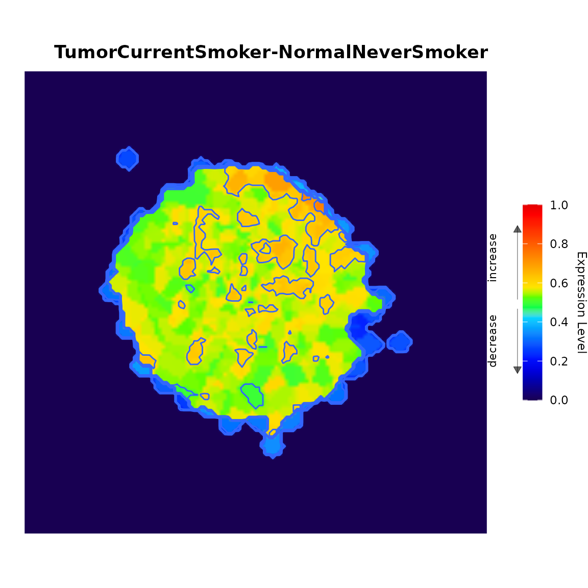

levi - Landscape Expression Visualization Interface
Isabelle M. da Silva, José R. Pilan, Agnes A. S. Takeda, Jose L. Rybarczyk-Filho
27 August 2025
Source:vignettes/levi.Rmd
levi.RmdOverview
The levi (Landscape Expression Visualization Interface) is a package for the R environment, developed to enable the visualization of the projection of gene expression on a biological network. levi is based on two other software, the first is the Viacomplex (Castro et al. (2009)), which was written in Fortran using the Dislin library to plot the data. The second is Galant (Camilo et al. (2013)), which corresponds to a plugin for Cytoscape software.
Two files are required to use levi: The file containing the expression levels of the genes and a file containing the biological network.
Files
Gene Expression Levels
This file should contain the genes of interest previously normalized by the user. The expression file (see Example) must have a column with the identification of genes (Gene Symbol, Entrez, etc.) and at least one column with gene expression levels (treatment, case, control, etc.). The user can compare the expression levels between samples if there are more columns containing these data.
If the expression file does not have values for all the genes of the network, a message will be displayed showing log file path to a temporary directory with the gene names. In the landscape construction, genes with no expression value will be displayed with values close to 0.5 demonstrating that there were no changes (down-regulated or up-regulated genes).
Data sets of gene expression can be obtained from online databases:
Biological Network
The levi supports several extensions of biological network files (*.net, *.dyn, *.txt, *.dat). The user should build the biological network using specific tools such as: Cytoscape, RedeR, Medusa, etc. To build the biological network is recommended the obtention of interaction data/ biological associations from online repositories:
| Extension | File Type | Link |
|---|---|---|
| dat | Medusa (DAT) | Example DAT |
| dyn | RedeR (DYN) | Example DYN |
| net | Pajek (NET) | Example NET |
| stg | STRING / STITCH | Example coordinates |
| stg | STRING / STITCH | Example interactions |
#Viewing Modes
levi has two viewing modes: Graphical User Interface (GUI) and script.
Graphical User Interface (GUI)
The GUI mode was developed using Shiny package (Figure 1). This viewing mode can be used in the R environment (browser=FALSE) or in the user’s default operating system browser (browser=TRUE).
library(levi)
LEVIui(browser=TRUE) #Launch Levi to Browser.
LEVIui(browser=FALSE) #Launch Levi to R environment.
-
1 - Tabs
- File - General options for uploading the data files.
- Settings - Options to build the landscape.
- 2 - Network input type: - Selection of the biological network input format. The options are available on the table 1.
- 3 - Upload the network file - Input button to select the biological network file.
- 4 - Upload the expression file - Input button to select the gene expression levels file.
- 5 - Expression values in log scale - select when there is low variation between expression data
- 6 - Selected fields - Selecting the type of analysis. Comparison between two samples or a single sample.
- 7 - Select gene symbol field - Selection of the gene ID contained in the gene expression levels file. The gene ID in the biological network file must be the same in the gene expression levels file. Select test field
- Select the case/test sample. Select control field - Select the control sample. If levi detects the case/test sample and control sample as equal, then levi will apply the “single sample” analysis.
- 8 - Chart Colors - Color palette to build the landscape. There is two options the Multicolor has 20 color levels combined. The Two colors has two categories of color palettes, multicolor and two colors. For the selection of two colors the available options are: purple_pink, green_blue, blue_yellow, pink_green, orange_purple, green_marine. Both of them is targeted to show the biological network with higher expression. (Figure 3 and Figure 4).
- 9 - Chart with contour - Enable or disable the contour lines in the landscape.
- 10 - landscape Image display area. The user can select specific areas of the image to inspect the gene name and position.
- 11 - Expression area: - Total expression value of the selected area in the image.
-
12 - Download options
- File format to landscape - Select the output format of the landscape. The options available are: TIFF, BMP, JPEG and PNG. We recommend using this option in the browser.
- Download Plot - Button to save the file.
- 13 - Visualization of gene name and expression value of the selected area in the landscape. The user can save the table in a csv file (button Download Data)
-
14 - Settings
- Contrast - Constrast value in the landscape. The variable range is 1 to 100. The default value is 50.
- Resolution - Image size of the landscape. The variable range is 1 to 100. The default value is 50. If this parameter is higher, then the total time required will be longer.
- Smoothing - Smoothing of the landscape. The variable range is 1 to 100. The default value is 50.I f this parameter is higher, then the total time required will be longer.
- Zoom - Zoom value for the landscape. The variable range is 1 to 100. The default value is 50.
Script
The levi scripting mode also has the settings for landscape building (see example below).
library(levi)
template_network <- file.path(system.file(package="levi"),"extdata",
"medusa.dat", fsep = .Platform$file.sep)
template_expression <- file.path(system.file(package="levi"),
"extdata","expression.dat",
fsep = .Platform$file.sep)
multicolor <- levi(networkCoordinatesInput = template_network,
expressionInput = template_expression, fileTypeInput = "dat",
geneSymbolnput = "ID",
readExpColumn=
readExpColumn("TumorCurrentSmoker-NormalNeverSmoker"),
contrastValueInput = 50, resolutionValueInput = 50,
zoomValueInput = 50, smoothValueInput = 50, contourLevi = TRUE)## Coordinate system already present. Adding new coordinate system, which will
## replace the existing one.
twocolors <- levi(networkCoordinatesInput = template_network,
expressionInput = template_expression, fileTypeInput = "dat",
geneSymbolnput = "ID",
readExpColumn=
readExpColumn("TumorCurrentSmoker-NormalNeverSmoker"),
setcolor = "pink_green", contourLevi = FALSE)## Coordinate system already present. Adding new coordinate system, which will
## replace the existing one.The script mode allows the user to compare combinations between two experiments in the gene expression levels file. The readExpColumn function can be used to this task to inform the combination separating by dash (-) and to add more combinations separate by comma (,).
library(levi)
base <- readExpColumn("TumorFormerSmoker-NormalFormerSmoker",
"TumorNeverSmoker-TumorNeverSmoker")
template_network <- file.path(system.file(package="levi"),"extdata",
"medusa.dat", fsep = .Platform$file.sep)
template_expression <- file.path(system.file(package="levi"),
"extdata","expression.dat",
fsep = .Platform$file.sep)
multicolor <- levi(networkCoordinatesInput = template_network,
expressionInput = template_expression,
fileTypeInput = "dat",
geneSymbolnput = "ID", readExpColumn= base,
contrastValueInput = 50, resolutionValueInput = 50,
zoomValueInput = 50, smoothValueInput = 50,
contourLevi = FALSE)## Coordinate system already present. Adding new coordinate system, which will
## replace the existing one.## Coordinate system already present. Adding new coordinate system, which will
## replace the existing one.
twocolors <- levi(networkCoordinatesInput = template_network,
expressionInput = template_expression, fileTypeInput = "dat",
geneSymbolnput = "ID",
readExpColumn= base,
setcolor = "pink_green", contourLevi = FALSE)## Coordinate system already present. Adding new coordinate system, which will
## replace the existing one.## Coordinate system already present. Adding new coordinate system, which will
## replace the existing one.Session information
## R version 4.5.1 (2025-06-13)
## Platform: x86_64-pc-linux-gnu
## Running under: Ubuntu 24.04.2 LTS
##
## Matrix products: default
## BLAS: /usr/lib/x86_64-linux-gnu/openblas-pthread/libblas.so.3
## LAPACK: /usr/lib/x86_64-linux-gnu/openblas-pthread/libopenblasp-r0.3.26.so; LAPACK version 3.12.0
##
## locale:
## [1] LC_CTYPE=C.UTF-8 LC_NUMERIC=C LC_TIME=C.UTF-8
## [4] LC_COLLATE=C.UTF-8 LC_MONETARY=C.UTF-8 LC_MESSAGES=C.UTF-8
## [7] LC_PAPER=C.UTF-8 LC_NAME=C LC_ADDRESS=C
## [10] LC_TELEPHONE=C LC_MEASUREMENT=C.UTF-8 LC_IDENTIFICATION=C
##
## time zone: UTC
## tzcode source: system (glibc)
##
## attached base packages:
## [1] stats graphics grDevices utils datasets methods base
##
## other attached packages:
## [1] levi_1.20.0 BiocStyle_2.36.0
##
## loaded via a namespace (and not attached):
## [1] sass_0.4.10 generics_0.1.4 xml2_1.4.0
## [4] stringi_1.8.7 digest_0.6.37 magrittr_2.0.3
## [7] evaluate_1.0.4 grid_4.5.1 RColorBrewer_1.1-3
## [10] bookdown_0.44 fastmap_1.2.0 plyr_1.8.9
## [13] jsonlite_2.0.0 brio_1.1.5 promises_1.3.3
## [16] BiocManager_1.30.26 httr_1.4.7 scales_1.4.0
## [19] isoband_0.2.7 textshaping_1.0.1 jquerylib_0.1.4
## [22] shinydashboard_0.7.3 cli_3.6.5 shiny_1.11.1
## [25] rlang_1.1.6 withr_3.0.2 cachem_1.1.0
## [28] yaml_2.3.10 tools_4.5.1 reshape2_1.4.4
## [31] dplyr_1.1.4 colorspace_2.1-1 ggplot2_3.5.2
## [34] httpuv_1.6.16 DT_0.33 mime_0.13
## [37] vctrs_0.6.5 R6_2.6.1 lifecycle_1.0.4
## [40] stringr_1.5.1 fs_1.6.6 htmlwidgets_1.6.4
## [43] shinyjs_2.1.0 ragg_1.4.0 pkgconfig_2.0.3
## [46] desc_1.4.3 pkgdown_2.1.3 pillar_1.11.0
## [49] bslib_0.9.0 later_1.4.3 gtable_0.3.6
## [52] glue_1.8.0 Rcpp_1.1.0 systemfonts_1.2.3
## [55] xfun_0.53 tibble_3.3.0 tidyselect_1.2.1
## [58] knitr_1.50 xtable_1.8-4 farver_2.1.2
## [61] htmltools_0.5.8.1 igraph_2.1.4 labeling_0.4.3
## [64] rmarkdown_2.29 testthat_3.2.3 compiler_4.5.1